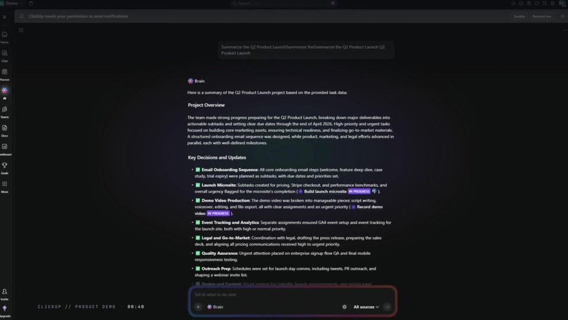
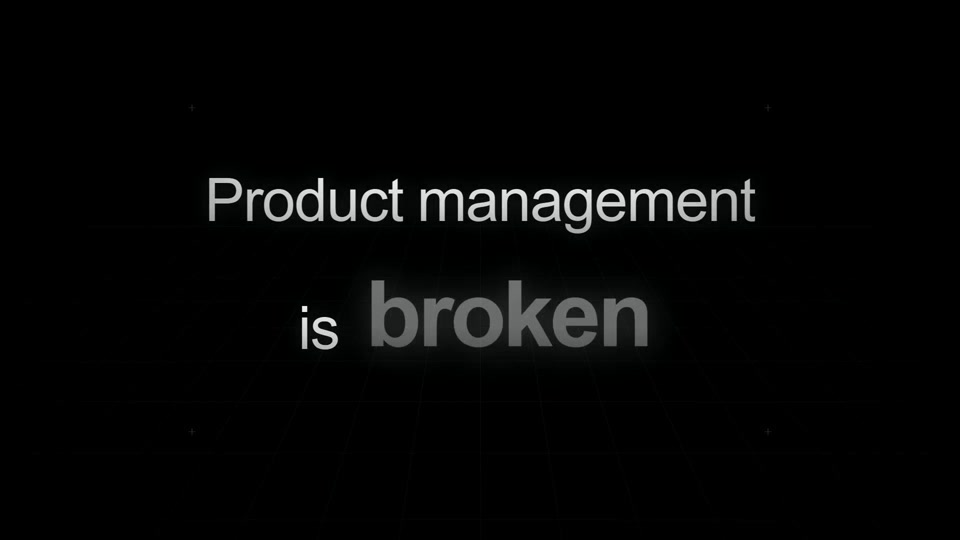
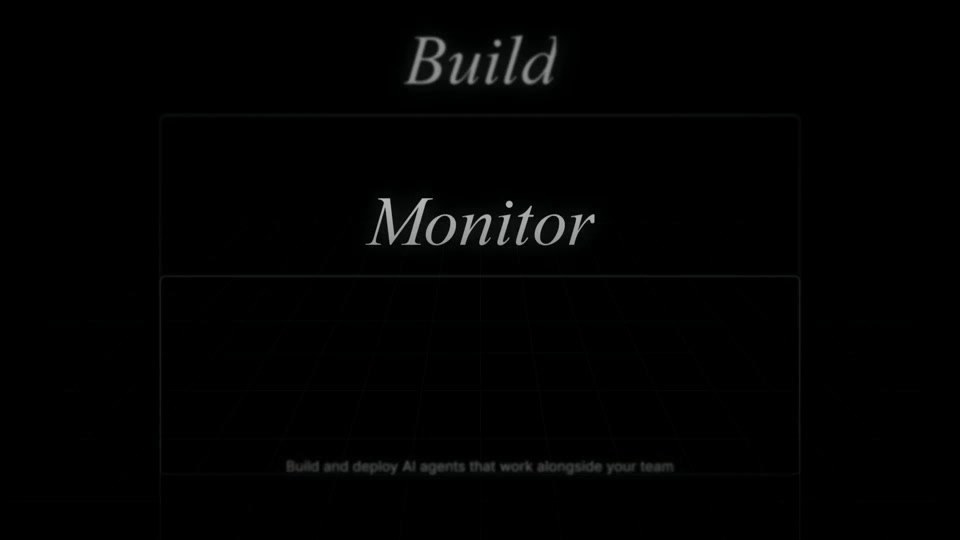
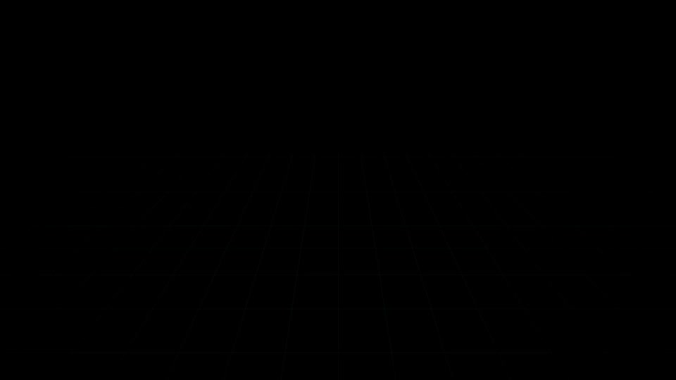
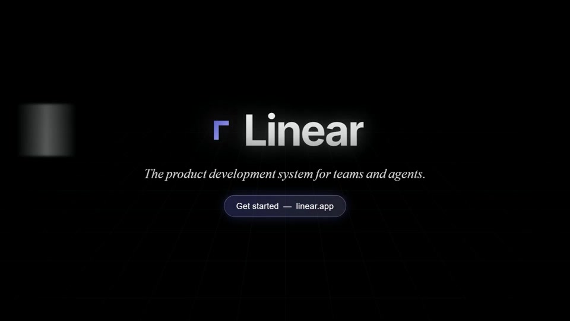

ê°Å¸Å½Â¥ Casos de estudo em vêÂdeo
Dois promos jê¡ entregues do kit. Assista primeiro, depois volte e leia cada seê§ê£o abaixo com os exemplos na cabeê§a.
clickup-demo (60s)
Demo SaaS com uso pesado de blocos do registry e shader transitions.
linear-promo-30s (30s)
Promo estilo Linear/Infinite Payments ê¢â¬â tight cuts, chrome typography, signature transitions.
video-projects/clickup-demo/ e
video-projects/linear-promo-30s/.
Abra o index.html para ver como foi construêÂdo.
ê°Å¸ââ Walkthrough passo a passo
Para aprender e modificar, leia o guia completo com estrutura de arquivos, explicaê§ê£o da timeline mestre, anatomia de uma sub-composiê§ê£o e 8 passos para adaptar ê sua marca:
docs/COMO-MODIFICAR-linear-promo.md ê¢â âê°Å¸Ââê¯Â¸Â Estrutura do SaaS promo
A arquitetura de 5 beats vende produto em 30-60s: hook ê¢â â problema ê¢â â soluê§ê£o ê¢â â prova ê¢â â CTA. Quebrar sem motivo forte ê© desperdêÂcio de produê§ê£o.
ê¢Â±ê¯Â¸Â Distribuiê§ê£o em 30s
Hook: padrê£o interrompido, visual forte, pergunta.
Problema: concreto, especêÂfico. Dor que o pêºblico sente.
Soluê§ê£o: produto em aê§ê£o. 2-3 features principais mostradas.
Prova: logos, nêºmeros, depoimento, review.
CTA: URL, action verbal, outro hold.
ê°Å¸â Estudo de frames ê¢â¬â clickup-demo (60s, beats dobrados)

Pattern interrupt inicial

Dor do pêºblico

Produto em aê§ê£o

Social proof, depoimentos

URL + outro hold
Frames extraêÂdos com ffmpeg -ss [tempo] -frames:v 1.
ê°Å¸â Estudo de frames ê¢â¬â linear-promo-30s (tight 30s)





ê°Å¸â¦ Blocos do registry
38 blocos prontos no catê¡logo Hyperframes. Para SaaS promo, os essenciais sê£o os de social proof (x-post, spotify-card, yt-lower-third) e UI showcase (app-showcase, ui-3d-reveal).
ê°Å¸â¦ Instalar um bloco
# Browse catalog
npx hyperframes catalog --type block
# Install
npx hyperframes add x-post
npx hyperframes add ui-3d-reveal
npx hyperframes add app-showcase
# O bloco vai para compositions/ com props documentadosê°Å¸â± Social proof
x-post, tiktok-follow, reddit-post, spotify-card, instagram-follow
ê°Å¸âÂ¥ê¯Â¸Â UI showcase
app-showcase, ui-3d-reveal, macos-notification, yt-lower-third
ê°Å¸â« Shader transitions
Transiê§êµes GPU dê£o sensaê§ê£o cinemê¡tica. Cada shader tem feeling diferente e motivaê§ê£o narrativa distinta.
whip-pan
Transiê§ê£o fast-paced com motion blur. Ideal entre scenes de ritmo acelerado.
cARCKHêtic-zoom
Zoom dramê¡tico em elemento central. Ideal para revelaê§ê£o de produto hero.
glitch
RuêÂdo digital. Pattern break, usado com moderaê§ê£o ê¢â¬â 1-2 vezes no vêÂdeo mê¡ximo.
sdf-iris
Abertura/fechamento tipo lente de cê¢mera. Elegante para intro ou CTA.
ê°Å¸â¡ Signature transition
Escolha UMA transiê§ê£o como signature da sua marca e use consistentemente. VêÂdeo com 6 transiê§êµes diferentes vira confuso.
ê¢Åâê¯Â¸Â Kinetic typography
Chrome gradient + halo glow ê© a signature estê©tica do MOTION_PHILOSOPHY. Texto flat preto-sobre-branco ê© default cansado; chrome dê¡ 80% do caminho para "parece profissional".
ê°Å¸âŽ CSS para chrome gradient
.chrome-text {
background: linear-gradient(180deg,
#f8fafc 0%,
#cbd5e1 45%,
#64748b 55%,
#94a3b8 100%);
-webkit-background-clip: text;
background-clip: text;
-webkit-text-fill-color: transparent;
text-shadow: 0 0 30px rgba(168, 202, 255, 0.4);
filter: drop-shadow(0 2px 8px rgba(0, 0, 0, 0.4));
}ê°Å¸â¡ Anime o gradiente
Para efeito shimmer, anime background-position de -100% a 100% em 1.5s ease-in-out. Simula reflexo de luz.
ê°Å¸â¤ Outro breathing
Hold de 4-6s no final com logo + URL, sem movimento. VêÂdeo sem outro parece cortado. Com hold suficiente, CTA fica na memê³ria.
ê°Å¸Å½Â¬ Outro do Infinite Payments (referêªncia)
ê¢Å¡Â ê¯Â¸Â Erros comuns
- ê¢ÅâHold de 1-2s ê¢â¬â nê£o dê¡ tempo de absorver CTA
- ê¢ÅâOutro animado demais ê¢â¬â distrai do CTA
- ê¢ÅâSem URL ê¢â¬â espectador sem aê§ê£o a tomar
ê°Å¸Â³ Render archival com docker
Para projetos premium onde cliente quer garantia de reprodutibilidade, use render em container Docker. Mesmo comando = mesmo byte-output, mesmo em 2 anos.
ê°Å¸Å½Â¬ Comando de render archival
npx hyperframes render \
--quality high \
--docker \
--fps 30 \
--output renders/final-archival.mp4Quality high = CRF 15 (ultra-limpo). Docker garante ambiente consistente entre mê¡quinas.
ê°Å¸âÅ Quando usar
- ê¢â¬Â¢Entregas para clientes que arquivam assets
- ê¢â¬Â¢Projetos legais/regulatê³rios
- ê¢â¬Â¢Campaigns que podem ser reativadas/atualizadas
- ê¢â¬Â¢Seu portfolio (vocêª vai querer replicar depois)
ê°Å¸ââ¹ Resumo do Mê³dulo
Prê³ximo Mê³dulo:
3.2 - Projeto Final Integrado (landing + deck + vêÂdeo)